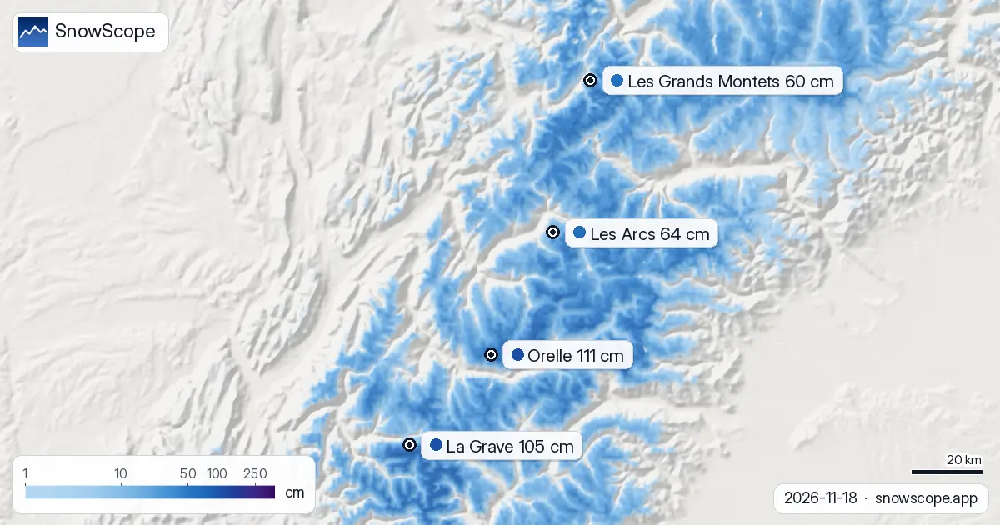

Alpine ski resort: ski Orelle, La Grave and Les Grands Montets
Alpine ski resort – Alps snow report, 18 November. We weighed the snow already on the ground, the new snow of the last 72 hours and what the forecast adds, and picked Orelle, La Grave and Les Grands Montets. The deepest snowpack of this group is at Orelle, about 111 cm on the upper slopes; next are La Grave 105 cm and Les Arcs 64 cm. Snow in the mountains is water held back for spring: what falls now feeds rivers and reservoirs later.
See the live snow forecast for Orelle in the SnowScope appSnow depth, powder alerts and the 3D map, free.
The next days in the forecast
More water is on its way as snow: by 21 November, our forecast gives 110 cm at Orelle, 104 cm at La Grave and 105 cm at Les Grands Montets.
Forecasts a few days ahead can change: look at the map again the day before you travel.
| Resort | Snow depth | New snow, 72 h | Coming, next days | Top |
|---|---|---|---|---|
| Orelle | 111 cm | 86 cm | 110 cm | 3,221 m |
| La Grave | 105 cm | 77 cm | 104 cm | 3,543 m |
| Les Grands Montets | 60 cm | 82 cm | 105 cm | 2,768 m |
| Les Arcs | 64 cm | 81 cm | 96 cm | 3,205 m |

The snow still to come
Up to 110 cm of new snow is forecast at Orelle over the next days.
Forecasts move: the timing is usually more reliable than the totals, so check again two days before you go.
At about 2,779 m, Orelle has 36 cm today; a normal 18 November has 58 cm there.
That is more than in 15 of the 46 past winters on this date.
In past winters the best snow at Orelle usually came early March / mid-March.
Day by day at Orelle: Wednesday 18 November 34 cm; Thursday 19 November 50 cm; Friday 20 November 52 cm; Saturday 21 November 8 cm.
Height by height at Orelle: 2,338 m 21 cm on the ground, 96 cm more in the next 7 days; 2,779 m 48 cm on the ground, 110 cm more in the next 7 days; 3,221 m 82 cm on the ground, 122 cm more in the next 7 days.

Where snow stays, where it melts
With the freezing level at 2,390 m to 2,780 m on 19 November, the lower slopes of Orelle may get wet snow or melt, while the top stays wintry.
South-facing slopes take the most sun and melt first; high, north-facing slopes keep their snow the longest.
Where the snow is best
Orelle gained 86 cm of new snow in the last 72 hours, 34 cm of it in the last 24 hours, so the snowpack there is growing. Height changes everything at Orelle: our model gives 21 cm at the base (2,338 m), 48 cm at mid-mountain (2,779 m) and 82 cm at the top (3,221 m). The last clear satellite view of Orelle, on 14 November, shows the slopes covered in snow.
In the last 72 hours, 77 cm of new snow fell on La Grave; 28 cm of it came in the last 24 hours. Our model splits La Grave into three heights: 95 cm at the top (3,543 m), 94 cm at mid-mountain (3,369 m), 86 cm at the base (3,196 m). On 14 November, its last clear day, satellites saw snow covering La Grave.
Les Grands Montets gained 82 cm of new snow in the last 72 hours, 29 cm of it in the last 24 hours, so the snowpack there is growing. Height changes everything at Les Grands Montets: our model gives 0 cm at the base (1,234 m), 12 cm at mid-mountain (2,001 m) and 44 cm at the top (2,768 m). The last clear satellite view of Les Grands Montets, on 14 November, shows the slopes covered in snow.
Avalanche danger and safety
Before you ski off-piste or go touring, read the official avalanche bulletin (links below).
Tips for skiers
- Snow on the map does not mean a resort is open: check lifts and opening dates on the resort's website.
- Small ski areas next to the big names often get the same storm and shorter lift lines. Check them on the map first.
- Early-season snow is thin. Stay on open, groomed pistes: rocks and grass can hide just under the surface.
- Shade protects the snowpack. High, north-facing slopes get less sun, so their snow lasts longer than on the south side.
- Get a powder alert in the SnowScope app to know when Orelle gets fresh snow.
About these numbers
Resort snow depths are the deepest snow on the resort's upper slopes from the SnowScope snow model (about 1 km, run of 18 November); they are estimates for an area, not a measurement at one point. Station values are measurements on the date shown. Forecasts can change. Always read the official avalanche bulletin before going off-piste.
Official avalanche bulletins: EAWS (Alps)
Cite this report
For research, teaching or the press: the numbers and charts are free to reuse under CC BY 4.0 with this citation.
SnowScope (2026), Alpine ski resort: ski Orelle, La Grave and Les Grands Montets, https://snowscope.app/blog/en/2026/11/alps-where-to-ski-this-weekend-18-november-2026.html, accessed 2026-11-18
SnowScope (Atlas Labs). (2026, November 18). Alpine ski resort: ski Orelle, La Grave and Les Grands Montets. SnowScope snow reports. https://snowscope.app/blog/en/2026/11/alps-where-to-ski-this-weekend-18-november-2026.html
BibTeX
@misc{snowscope2026alpswheretoskithisweeken,
author = {{SnowScope (Atlas Labs)}},
title = {Alpine ski resort: ski Orelle, La Grave and Les Grands Montets},
year = {2026},
month = nov,
howpublished = {\url{https://snowscope.app/blog/en/2026/11/alps-where-to-ski-this-weekend-18-november-2026.html}},
note = {Published 2026-11-18 11:02 UTC; accessed 2026-11-18}
}· CC BY 4.0 · Methods, data and tools →
Orelle: snow and temperature by height, this winter vs last (tools) →
Follow Orelle
Free: a message when fresh snow is coming, and the forecast every morning.
More snow reports

What is true about La Grave, the off-piste mountain under La Meije: terrain, safety, snow by month and the trend, from 46 past winters.

Snow depth in Chamonix on 13 November 2026, height by height: nothing on the valley floor, 1 cm at 2001 m, 12 cm at the top of Brévent-Flégère (2486 m), 5 to 24 cm at the top of the Grands Montets (2768 m). About a metre forecast up high this week, rain in the valley. How deep Chamonix usually gets, from 46 winters.

A slope map of Les Grands Montets and seven other ski areas shows how much of the ground is steeper than 30°, 35° and 40°, and why that line matters for avalanches.